【渝传尺素•十七】乘兴而来，满载而归。
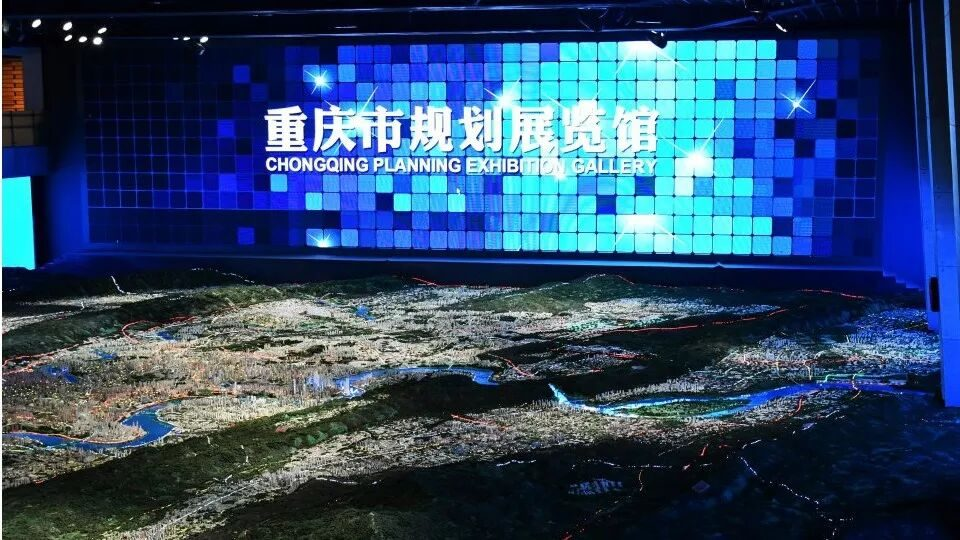
行
者
陈
辉
今天距离行者无疆结束已经二十多天了，心绪稍许平复，我们手边的工作还是围绕着社会实践有条不紊地进行。六天时间紧凑，实践内容详尽，后期工作当然也需要加大力度才能更好地完善一次社会实践。我们一是为了完善充实我们的实践活动，二是做好我们与文化传播之间的媒介。这也体现出了一个团队的文化，团队各个工作组成员各司其职，团结奋进，打造最完善最充实最专业的文化调研团队。
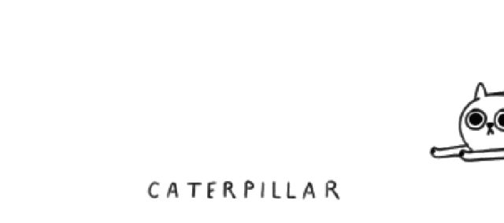
最美不过初相
从团队招募信息发布到现在，我和团队已经走过了两个多月的时间，在这期间我从一名摄影小白成长为了一个能够基本完成摄影和后期制作任务的队员，尽自己最大的努力为团队做好本职工作。能进入这个团队真是说来话长，要承认一点，一定程度上我是占了硬件设备的优势😆，不然恐怕谁也不会让一个小白来承担摄影吧，这也是团队对我的信任和包容。
见面会上我说，“我是摄影小白，希望和大家一起成长，为团队做好本职工作”，虽然按快门谁都会，但是摄影的道道还是挺多的，我也在不断学习的过程中，努力做好摄影和后期行程。💪
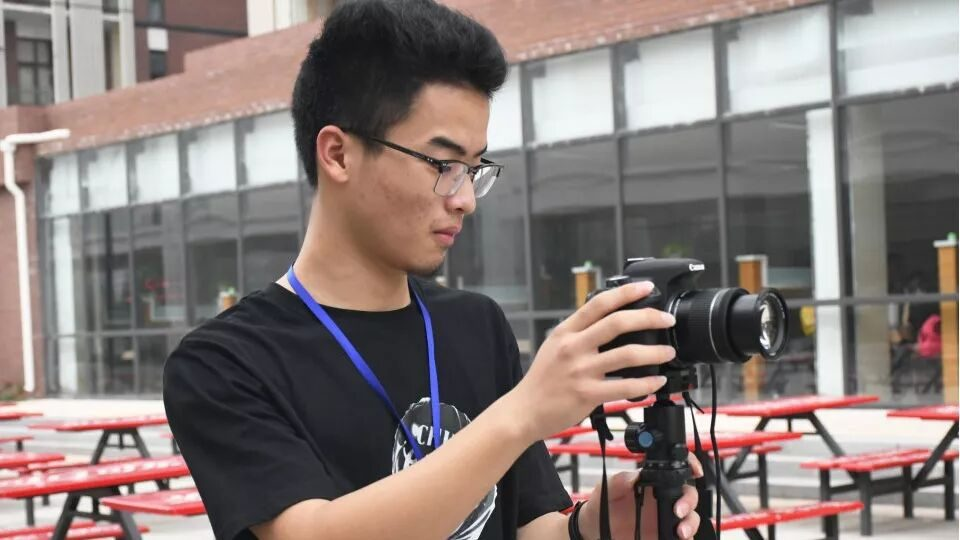
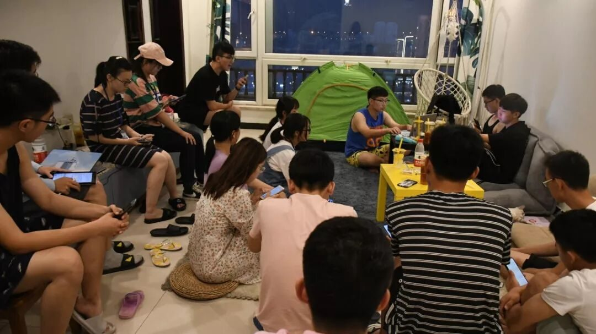
我的行者无疆
fresh summer
每晚团队分享会上，聆听有思考的人的想法是一种享受，能够参与其中更是一种财富。分享会是成员一日的收获与思考，是思维的碰撞，在这个会上我们收获到白天无法看到无法听到的内容思考，我们也收获了心灵的融合，个人与团队的成长。
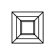
盛夏之遇，美丽之渝
城市规划馆中，除了感受到高科技的魔力之外更让我感受贴切的是重庆的不简单。这种不简单是建立在人们克服种种消极因素，在尊重自然的基础上对大自然积极改造，是充分发挥人的主动性的尝试，是科学的“人定胜天”。
城市规划馆
要说规划馆是展望未来，那名人馆一定是回首过去，一个地区的发展一定是离不开生活在这里的人，历史源远流长，人文古迹见证了城市的发展。我们站在时代的潮头，回首奋斗在这片土地上的人们，油然心生敬畏，他们不屈不挠，负重前行，缔造了一个宠辱不惊的城市。
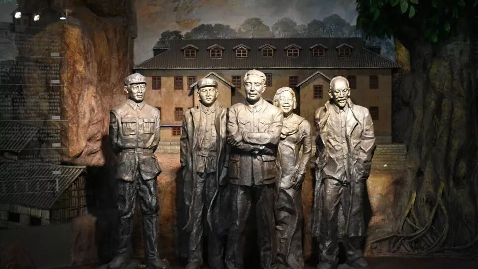
名人馆
石刻精华在大足，木雕精华在渝北，遗憾这次没有见到大足石刻，但是关乎木雕的古床文化，同样是体现了人们对于美好生活的祈求以及工匠师傅的匠心精神；川剧兼容并包的特点给自己带来了更多的发展机遇，从题材中发掘现代的气息，去适当适应现代生活；蜀绣一针一线绘出大河江山、才子佳人，蜀绣人诠释了坚持的伟大，他们负重前行，只为这一份热爱。
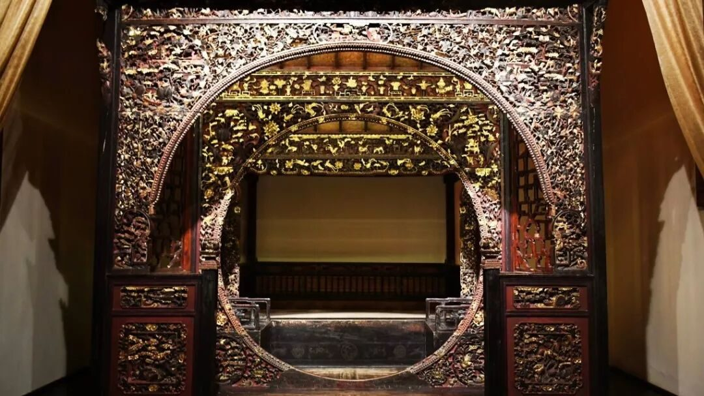
巴渝民俗馆
现在是信息时代，多媒体传播如火如荼。面对这样的时代的冲击，我们无法苛责人们去“网红打卡地”渣滓洞、白公馆、洪崖洞等等具有历史意义的、流过血和泪的地方参观打卡，无论他们是否心生敬畏，无论他们是以一种什么样的心态，这都是他们应有的权利，不能对他们多加负面评价。🤔🤔🤔我们换个角度思考，渣滓洞等这些具体的地点能够宣传出去，本身就是一个成功的例子，我们承认这一定程度上是由于抖音热、网红热带来的，但是也无可厚非，先提高数量再提高质量也是一条途径，更何况国民素质在不断提高，文化氛围的提高也是时间问题，都是在过程之中。
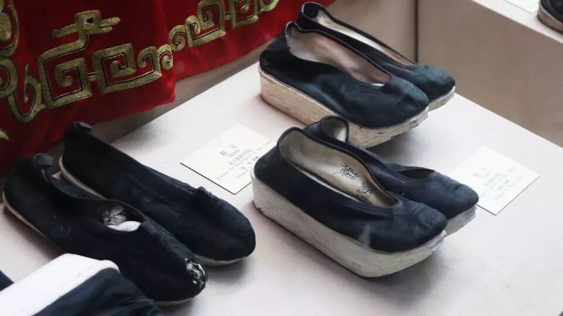
白公馆
我们处于中华民族伟大复兴的关键时期，要坚定文化自信，伟大的时代当有伟大的文化。生命之树常绿，文化之树常青。我们坚信，新时代文艺之路一定会越走越宽广。
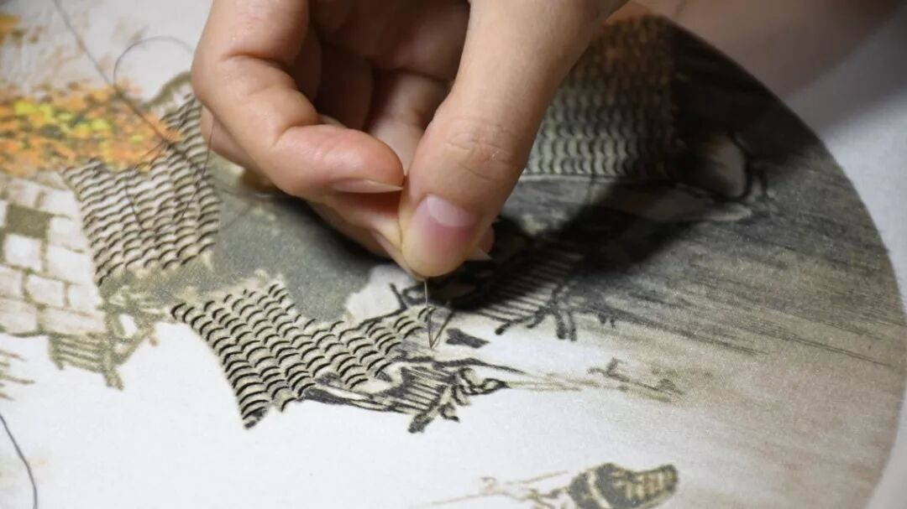
蜀绣
文化传承，继往开来。
对于传承传统文化，
有兴趣学习的是继承者，
有爱好的可以是收藏者，
还有在商业化中就会有消费者，
他们都可以是传统文化的传承者。
继承者可以继往开来，收藏者也可以像樊建川一样，消费者就是我们这些大众，喜欢的自然有兴趣去关注去发扬，不喜欢的也不强求这份力量。习现在是在提倡发扬传统文化，让传统文化走进基层，走进学校，从我们青年中去发掘可以传承传统文化的力量，让我们了解到我们的历史长河里有这一份传统文化，自然有继承者、收藏者、消费者。
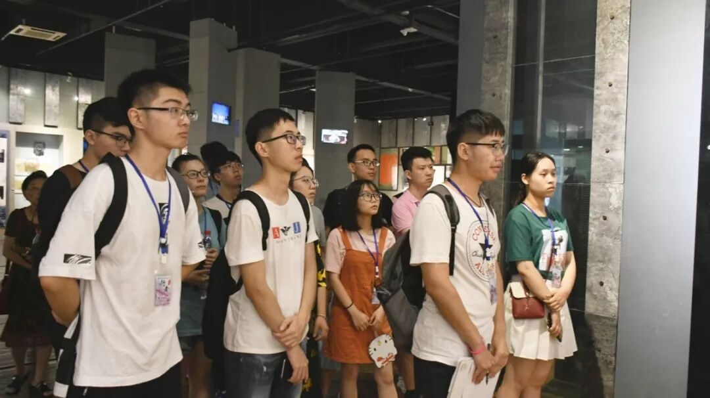
还有我们这样的调研者，虽然我们的力量确实有限，但是我们是在做力所能及的事，💪我们对文化的调研探寻，我们是在敬畏我们的历史。我们作为文化传播的中介，只为尽我们绵薄之力，让身边的大众知道明白，我们的祖国大地上曾经发生过的存在过的人文历史。
纵使烈日炎炎，我们也不停地奔走着，👍也许是为了心中的信念，也许是为了那个想要的答案，也许，是为了探索那未知而令人向往的世界。在社会实践中我们收获的不仅仅是知识、阅历上的增长，一起经历实践的我们更是收获了不可多得的友谊和情感。
❖我心有疆
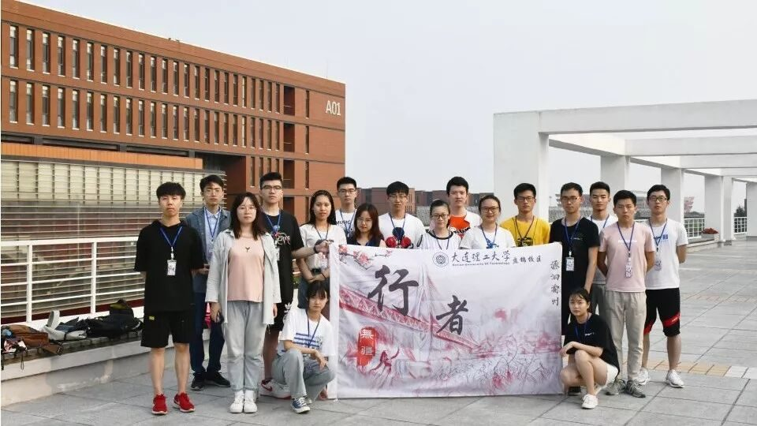

巴山渝水朝朝恋，
文化精神代代传，
源洄渝州圆满结束，
我们满载而归。
思者无域，
行者无疆，
我们的与文化的故事未完待续。
来源丨行者无疆实践团
文字丨陈辉
排版丨康艳虎
审核丨邓子孚 段智然
视频丨陈辉
行者无疆实践团
QQ：2758025831

随行者一起认识世界
长按二维码